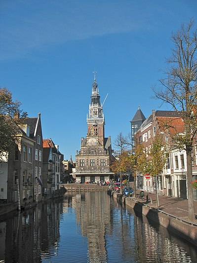
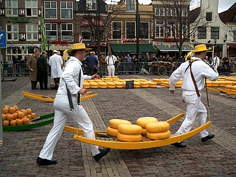

De Waag
De Waag in Alkmaar is een gebouw op het Waagplein dat in gebruik is geweest als kapel en waag.
Het Hollands Kaasmuseum en de VVV zijn tegenwoordig in het gebouw gevestigd
Het gebouw heeft een toren met beroemde ruitertjes en een fraai carillon.
Het gebouw is in 1969 aangewezen als rijksmonument.
Op het Waagplein wordt in de zomer de kaasmarkt gehouden.

Kaasmarkt
De Alkmaarse kaasmarkt is al meer dan vier eeuwen een traditie,
die jaarlijks door 100.000 mensen wordt bezocht. De 'markt' vindt plaats op het Waagplein,
voor het monumentale Waaggebouw. In de 18e eeuw werd vier dagen per week kaasmarkt gehouden,
en deze duurde tot 1 uur 's nachts. Gemiddeld werd per marktdag 300 ton kaas omgezet.
Sinds 1939 is Alkmaar de enige stad die nog kaas verhandelt op deze traditionele wijze.
De kaasmarkten zijn elke vrijdag, van april tot september, te bezichtigen.
Op de kaasmarkt lopen de kaasdragers van het Alkmaarse Kaasdragersgilde in vier verschillende kleuren: geel, rood, blauw en groen. Zo vormen zij groepen die vemen worden genoemd. Alle kaasdragers dragen een wit pak met strooien hoed. De kaasdragers hebben verschillende benamingen.
Een vastman is een ervaren kaasdrager.
De tasman is de oudste kaasdrager, en draagt een zwart leren tas op zijn buik. Hij zet bij het wegen van de kaas de gewichten op de weegschaal.
De overman is de voorman van het veem, en is herkenbaar aan een zilveren schildje met lintje in de kleur van zijn veem. De overman wordt voor een periode van twee jaar benoemd.
De kaasvader is opzichter over alle vier de vemen. Hij draagt een zwarte stok met zilveren knop.
De provoost wordt door de kaasdragers de 'beul' genoemd, omdat hij voor het gildebestuur de laatkomende kaasdragers noteert en de boete daarvoor int. Hij draagt een zilveren kaasberrie.
De knecht wordt, net als de provoost, door het gildebestuur benoemd en heeft de functie van klusjesman.
Om 10:00 uur luidt de aanvangsbel en begint de kaasmarkt. De zetters beladen de karakteristieke berries, die door de kaasdragers naar de weegschaal worden gedragen. Aldaar wordt de kaas gewogen. Op het plein bepalen keurmeesters de kwaliteit van de kaas en onderhandelen handelaren over de prijs. Dit gaat traditioneel gepaard met het handje klap.
Omstreeks 12:30 is de kaasmarkt afgelopen.